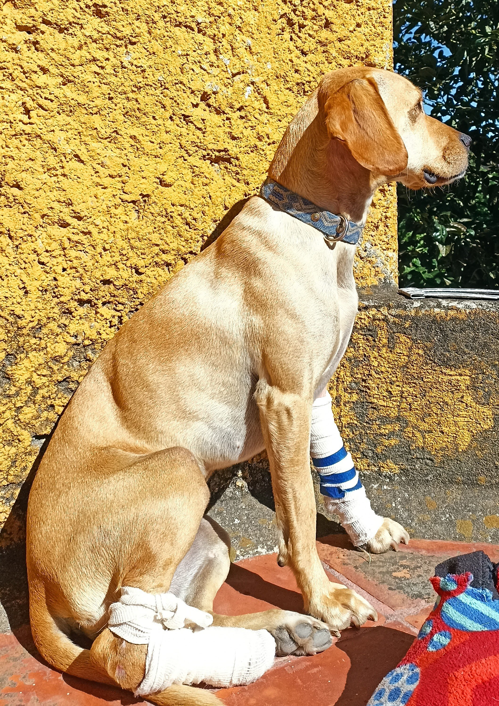
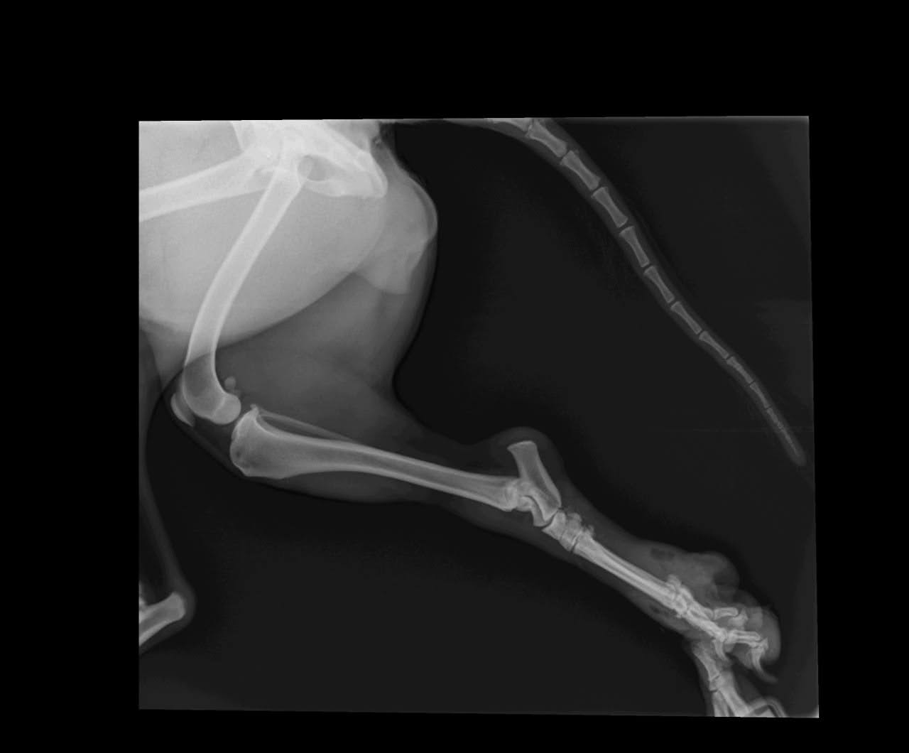
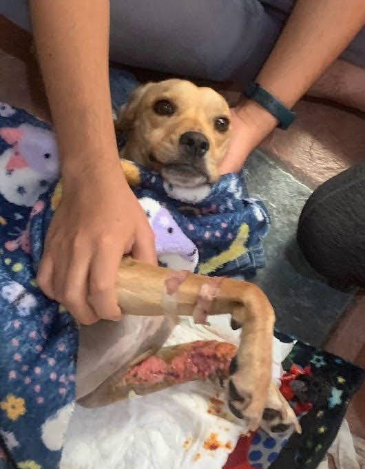

Ayuda a Ankara
Ayuda a Ankara a correr de nuevo
Ankara es parte de nuestra familia. Fue atropellada y el responsable huyó. Necesitamos tu ayuda para pagar la cirugía de su pata y que pueda correr de nuevo

De qué trata?
La pata trasera derecha de Ankara sufrió daños en el tendón, ya no puede utilizarla para pararse. El doctor recomienda una operación, ya que es la única manera en la que Ankara podrá volver a apoyar su patita y caminar normalmente. Necesitamos ayuda para costear su cirugía, usamos nuestros ahorros para el cuidado de emergencia la noche del accidente

¿Cómo vamos a utilizar el dinero?
El dinero va a cubrir:
- La operación necesaria y el seguimiento posterior al procedimiento
- Si es posible, el tratamiento de emergencia que recibió la noche del accidente

Acerca de nosotros
En mi familia hay 3 perritos: Ankara, Max y Sandy. Los amamos mucho, y tratamos de cuidar muy bien de ellos. Necesitamos tu ayuda porque utilizamos nuestros ahorros para cubirir los gastos de emergencia de la noche del accidente. Solo queremos volver a ver a Ankara correr, es su cosa favorita y es la más rápida de sus amigos. Si contamos con tu ayuda mi familia y yo te mandaremos un correo con un mensaje de agradecimiento, y noticias sobre la operación de Ankara.
Datos de contacto
Si deseas ayudarnos por favor escríbenos por WhatsApp
O usando este código QR
Nuestra cuenta de banco es:
| Santander a nombre de | Noemi Nora Cisneros Ríos |
|---|---|
| CLABE: | 014650230003728692 |